Service Excellence
PD Excellence Center
Patient-centric peritoneal dialysis care delivered through a multidisciplinary team of nephrologists, surgeons, nurses, pharmacists, dietitians, and social workers.
A tri-hospital alliance and ISN-endorsed Interventional Nephrology Training Center — uniting three leading Thai hospitals around procedural excellence, clinical research, and global academic collaboration.
The name "Trinity" reflects the foundation of our network — three Thai hospitals working as one to advance kidney care across the country and beyond. Together with the International Society of Nephrology (ISN), we form an endorsed Interventional Nephrology Training Center serving physicians from across the Asia-Pacific region and the world.
Anchored by the PD Excellence Center at King Chulalongkorn Memorial Hospital, and extended through partner sites at Samutprakan Hospital and Chaiyaphum Hospital, Trinity Center-ISN provides depth of clinical exposure, breadth of patient populations, and a research infrastructure that connects local practice with global evidence.
To provide an intensive, two-week training program focused on procedural techniques and clinical exposure in interventional nephrology — achieving high levels of procedural competency for participants.
To lead the advancement of kidney care through visionary education, compassionate patient-centered service, and high-precision innovation driven by proactive international collaboration.
Each hospital contributes its unique strengths to the Trinity network.
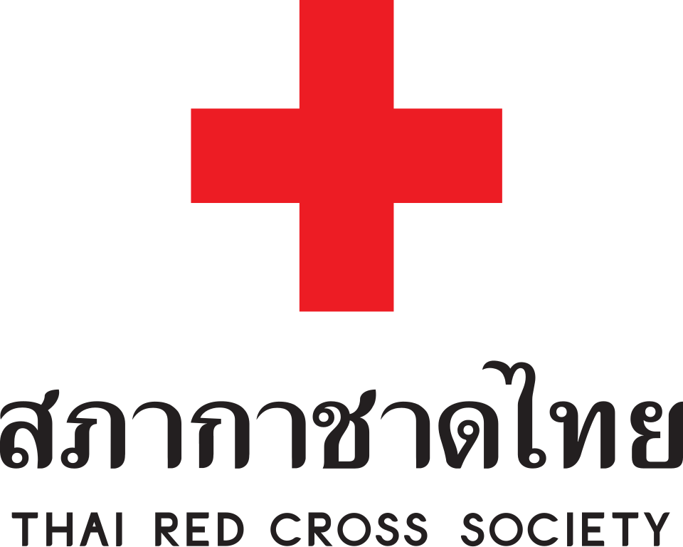
KCMH'">Thai Red Cross Society · Bangkok
Lead CenterHome of the PD Excellence Center, host of Thailand-PDOPPS, and lead investigator site for ISPD-endorsed multinational studies.
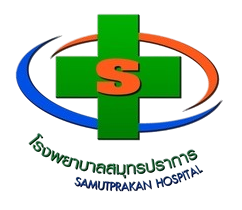
SH'">Ministry of Public Health · Samutprakan
Regional CenterA high-volume provincial referral center providing trainees with exposure to a diverse, community-rooted patient population.
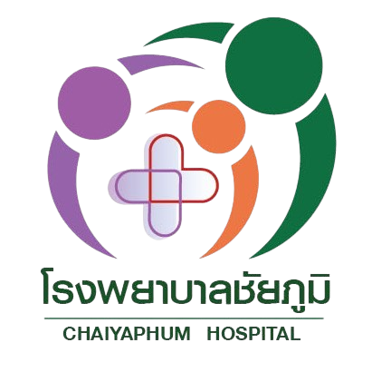
CH'">Ministry of Public Health · Chaiyaphum
Regional CenterA regional center extending Trinity's reach into northeast Thailand and rural kidney-care delivery.
Each center is led by a dedicated site director, ensuring local clinical excellence and continuity across the Trinity network.
Lead Center Director · Program Director
PD Excellence Center · Division of Nephrology, Department of Medicine
Faculty of Medicine, Chulalongkorn University · Bangkok, Thailand
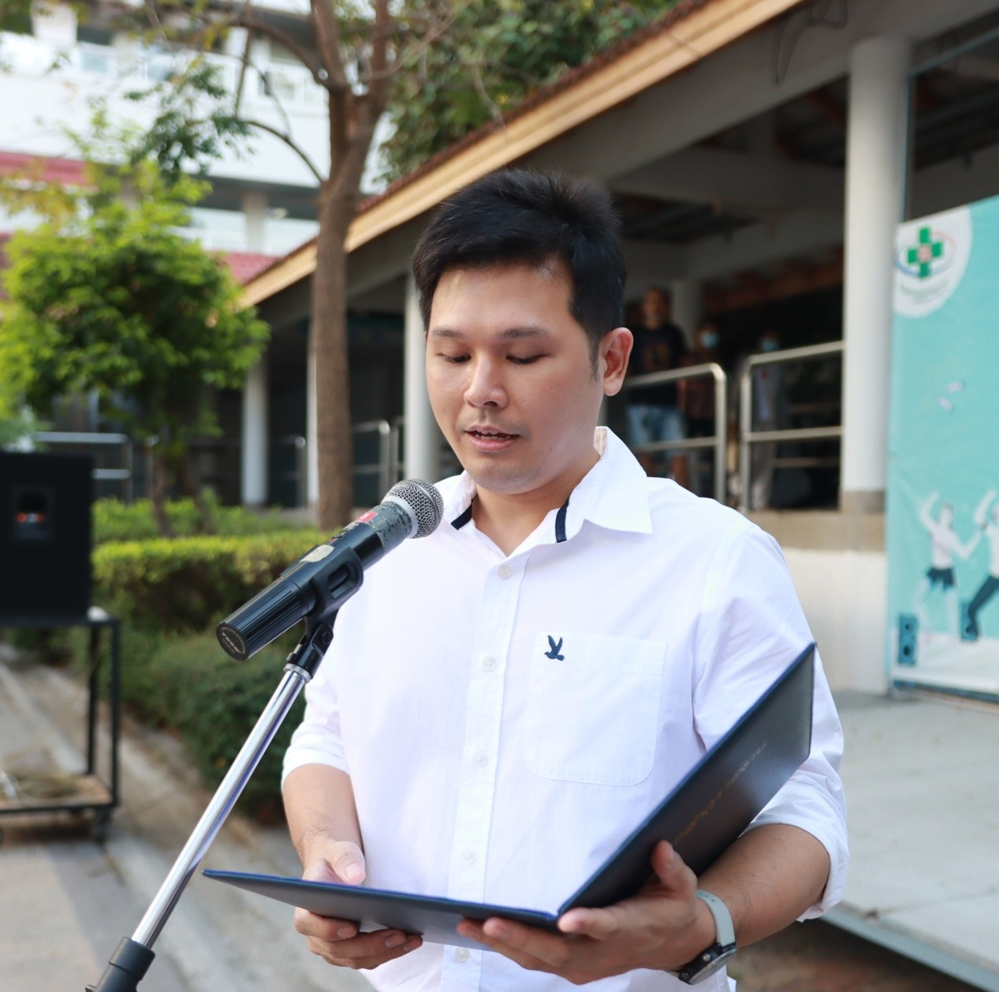
TS'">Site Director
CAPD Clinic, Division of Nephrology, Department of Medicine
Samutprakarn Hospital · Samutprakarn, Thailand
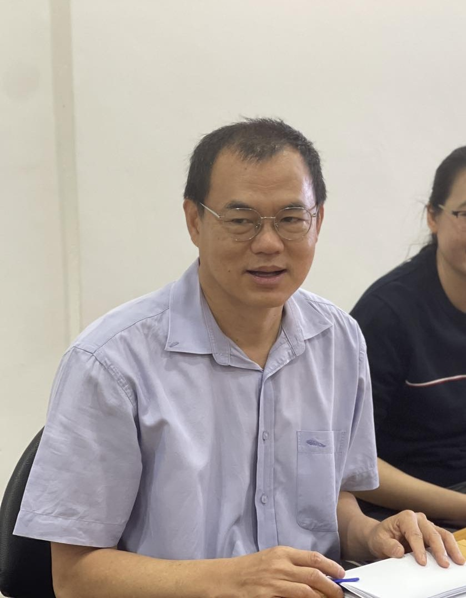
ST'">Site Director
Nephrology Division, Department of Internal Medicine
Chaiyaphum Hospital · Chaiyaphum, Thailand
Service, teaching, and research — woven together into a single, integrated mission.
PD Excellence Center
Patient-centric peritoneal dialysis care delivered through a multidisciplinary team of nephrologists, surgeons, nurses, pharmacists, dietitians, and social workers.
ISN Interventional Training Center
An intensive two-week fellowship covering HD catheter, PD catheter, kidney biopsy, and POCUS — endorsed by the International Society of Nephrology.
KMeD Clinical & Translational Research
Bridging laboratory findings with patient care through 7 active clinical trials, 94+ high-impact publications, and the 8-country PDOPPS network.
What every fellow takes away from a Trinity Center-ISN training cohort.
Observe or perform core nephrology procedures under professional supervision. Achieve high levels of procedural competency in HD catheter, PD catheter, kidney biopsy, and POCUS.
Gain a thorough understanding of procedural indications, contraindications, and potential complications — applied through real-world cases at our partner hospitals.
Integrate point-of-care ultrasound directly into procedural decision-making — not as a separate skill, but as a core part of how interventional nephrology is practiced.
Effectively manage peri-procedural risks such as infections, bleeding, and access-related complications — applying evidence-based practices throughout.
A multidisciplinary team across nephrology, surgery, nursing, pharmacy, nutrition, and social work.
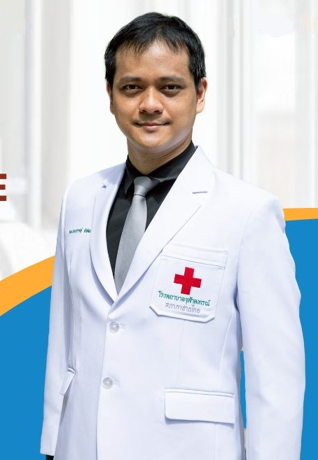
PP'">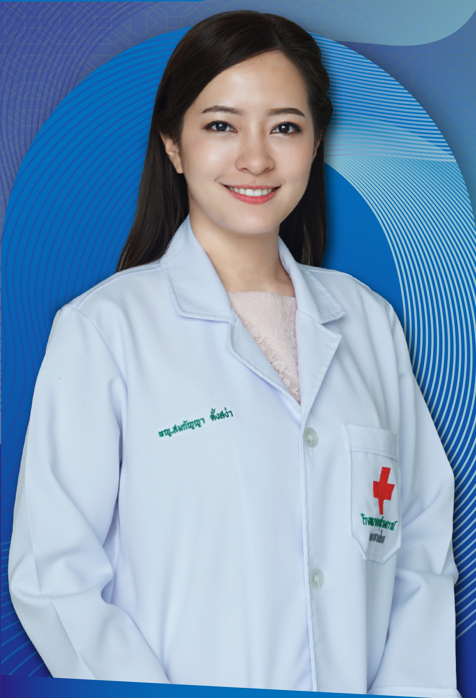
ST'">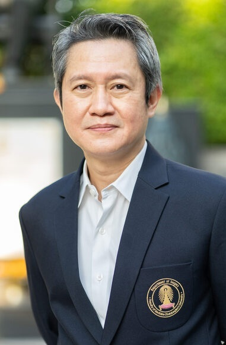
SM'">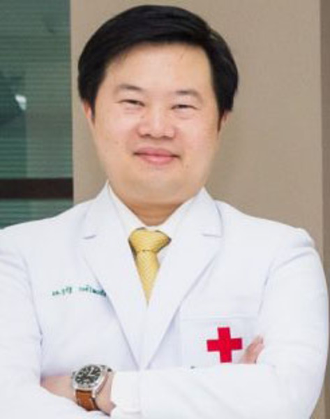
PV'">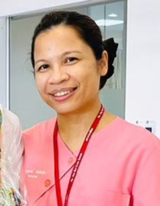
PT'">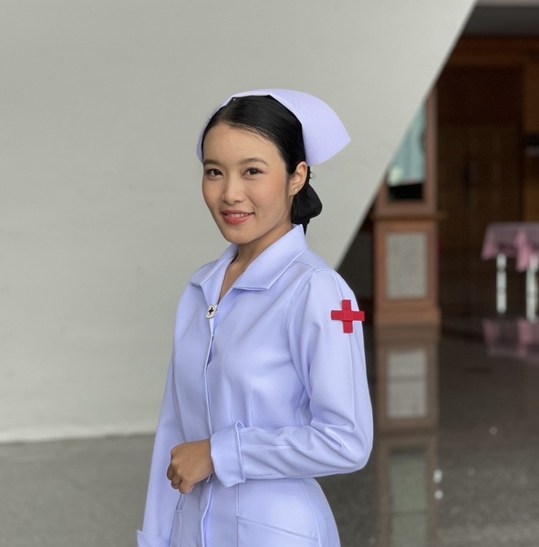
CP'">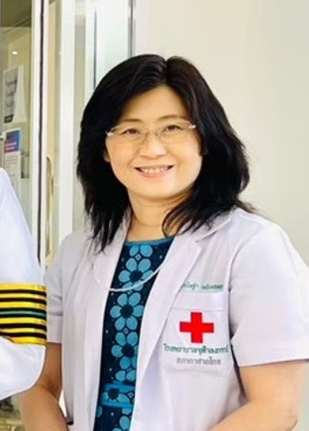
KT'">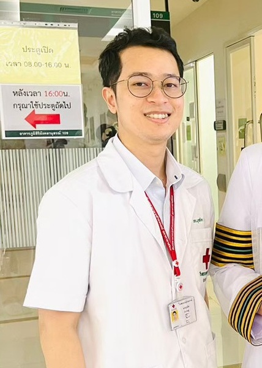
BP'">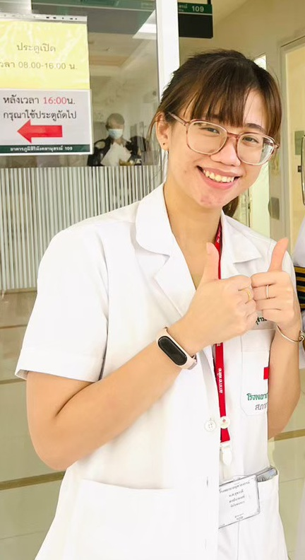
ST'">We welcome collaboration with institutions, clinicians, and researchers committed to advancing kidney care.
Contact Us